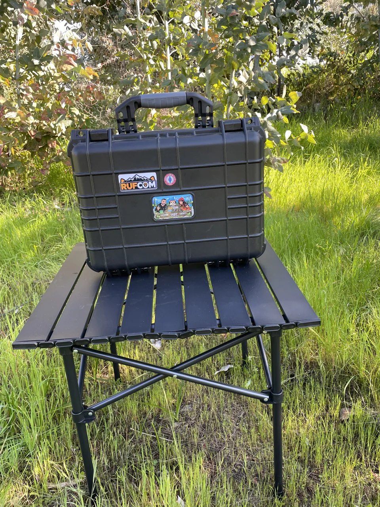
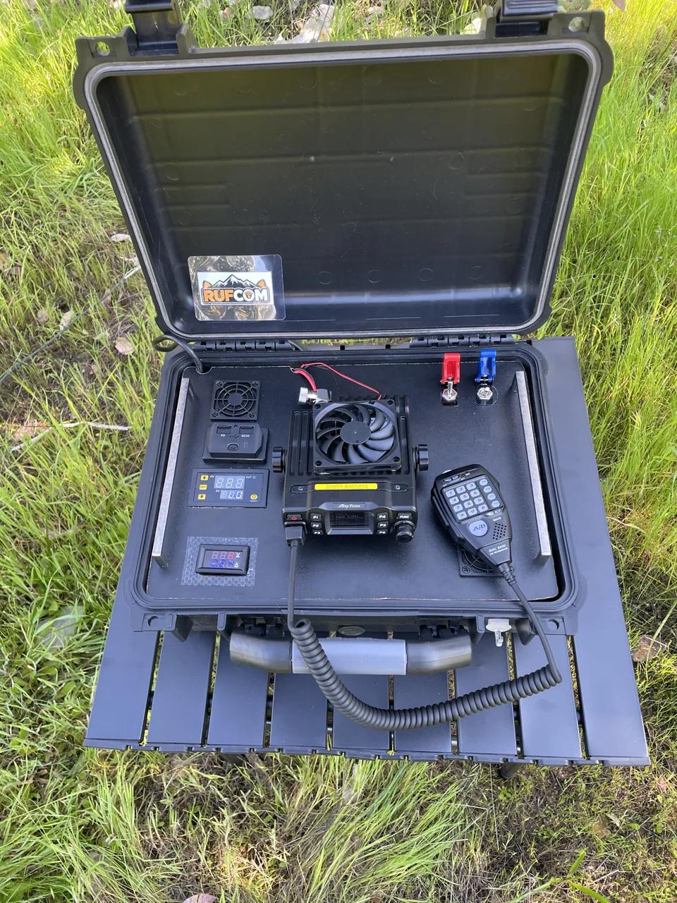
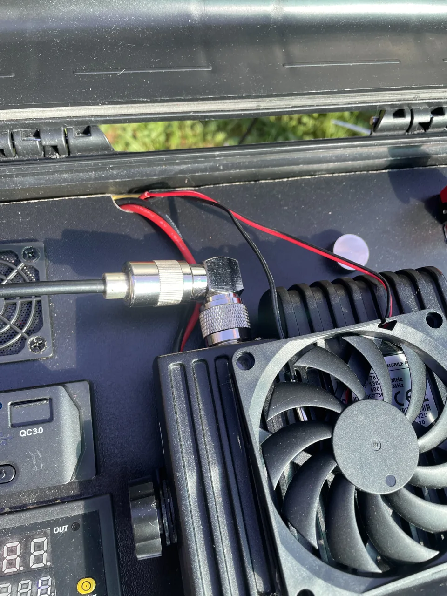
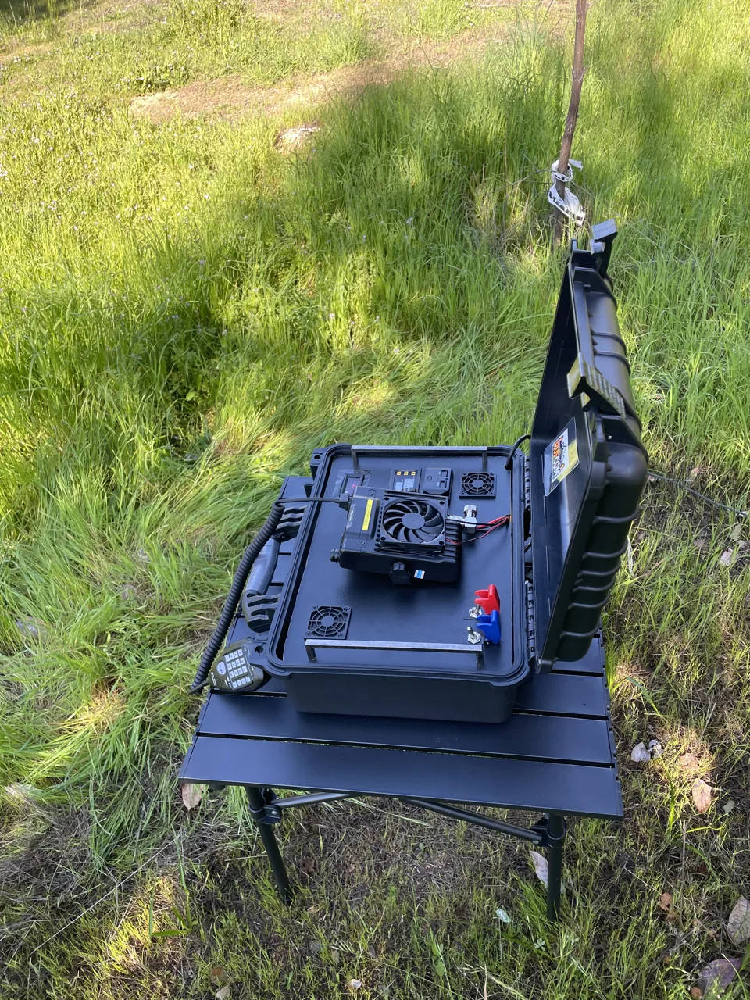

No queríamos simplemente guardar una radio en una caja. Queríamos una estación que tuviera energía, respaldo, medición y conexiones organizadas en un solo lugar.

Un espacio que vuelve a ser tuyo
Tu casa no necesita una habitación de radio.
En un departamento pequeño, la mesa puede tener muchos usos. La idea es instalar la estación cuando quieras comunicar y guardarla cuando necesites recuperar ese espacio.
La maleta reúne el equipo y sus conexiones. Para operar, ábrela, prepara la alimentación y conecta una antena externa adecuada.
¿Qué lleva?

Radio móvil
El corazón de la estación. Un equipo pensado para trabajar con una antena externa y alimentación estable.
Fuente de alimentación
Permite alimentar la estación desde la red eléctrica de casa o de un lugar con enchufe disponible.
Batería AGM de 12 V
La maleta incorpora una batería para usar la estación cuando no tienes un enchufe cerca.
Voltaje y corriente
Indicadores que permiten revisar rápidamente el estado eléctrico y el consumo de la estación.
Interruptores y protección
Ordenan el encendido y ayudan a proteger la instalación. Los fusibles adecuados son parte importante del montaje.
Conexión de antena
La salida hacia una antena externa permite adaptar la estación al lugar: casa, balcón, vehículo o terreno.
Del proyecto a las piezas
Los materiales que le dieron vida
Estos son los componentes que utilicé para construir esta maleta y la función que cumple cada uno. Toma este montaje como inspiración y adapta tu proyecto a tus necesidades y presupuesto, verificando la compatibilidad de las piezas que elijas.
01 · Estructura
Maleta de 16 pulgadas
Caja de herramientas adaptada para alojar los equipos, las conexiones y los controles.
02 · Comunicación
Anytone AT-778 UV
La radio del montaje, utilizada a 25 W en las pruebas de consumo.
03 · Alimentación
Nissei SPS-1335
Alimenta la radio y carga la batería cuando la maleta está conectada a 220 V.
04 · Respaldo
Ultracell UL7-12
Batería de 12 V y 7 Ah para alimentar la maleta cuando no hay conexión a la red eléctrica.
Ventilación y accesorios
- Dos ventiladores de 50 × 50 mm: uno introduce aire y otro lo extrae del compartimento de la fuente y la batería.
- Un ventilador de 80 × 80 mm con termostato: ubicado sobre la radio, se activa al alcanzar la temperatura configurada.
- Voltímetro y amperímetro: muestran el voltaje y el consumo de corriente.
- Módulo de carga rápida USB-A y USB-C: para cargar dispositivos compatibles.
Control y protección
- Interruptor rojo: en este montaje, habilita la carga de la batería con conexión a 220 V y la alimentación desde la batería cuando no hay red eléctrica.
- Interruptor azul: activa los dos ventiladores del compartimento interior.
- Cable calibre 12 AWG.
- Dos fusibles de 10 A: uno para la fuente y otro para la batería, con portafusibles e interruptores seleccionados para 10 A.
Máximo indicado en mis pruebas
Transmitiendo a 25 W, con los tres ventiladores encendidos y cargando un celular. Esta medición corresponde a esas condiciones de uso de mi montaje; sirve como referencia para conocer su consumo.
¿Por qué elegí esta fuente?
La Nissei SPS-1335 es uno de los componentes de mayor costo del proyecto. La elegí porque permite alimentar la radio y cargar la batería en una misma solución.
Es el modelo que he utilizado y sobre el que puedo compartir mi experiencia. No es obligatorio repetir esta elección: si decides utilizar otro, verifica que sea compatible con tu radio, batería y las funciones que necesitas.

Las piezas en uso
Conexiones pensadas para el espacio disponible.
El conector en ángulo ayuda a orientar el cable dentro de la maleta. Es una de esas piezas pequeñas que facilitan organizar el montaje.
Conoce los adaptadoresPlaneamos cambiar la batería AGM por una de litio LiFePO₄, buscando aligerar el conjunto para que sea más cómodo trasladarlo. Es una mejora prevista: la configuración actual utiliza AGM de 12 V.
¿Qué buscamos con este proyecto?
Todo ordenado
Los componentes tienen un lugar definido y las conexiones quedan protegidas.
Proteger el equipo
La maleta hermética ayuda a resguardar la estación durante transporte y almacenamiento.
Poder trasladarla
La estación puede acompañar una salida, una prueba en terreno o servir como respaldo de comunicaciones.
La filosofía de la maleta
No se trata de llevar la mayor cantidad posible de equipos. La idea es tener lo necesario, bien instalado y listo para usar.
Una estación que se adapta a tu espacio
En casa o al aire libre: radioafición práctica, experimentación y aventura, sin depender de un escritorio permanente.

De casa a tu próxima salida.
Lo que aprendes usando tu estación en casa también te acompaña a terreno. El lugar cambia; tu equipo sigue reunido en la misma maleta.
Dale forma a tu proyecto
Tu imaginación es el límite
Esta maleta puede ser el punto de partida para tu propia idea. Elige las funciones que necesitas y dale tu estilo.
¿Tienes dudas o un proyecto en mente? Escríbenos y te asesoramos para darle forma.
contactorufcom@gmail.com

Un proyecto construido para aprender, probar y salir a comunicar.